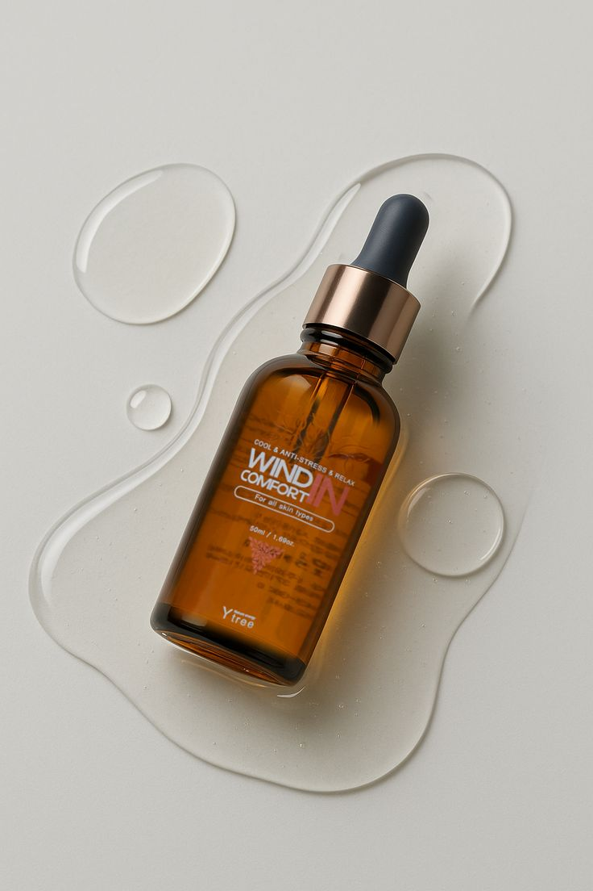
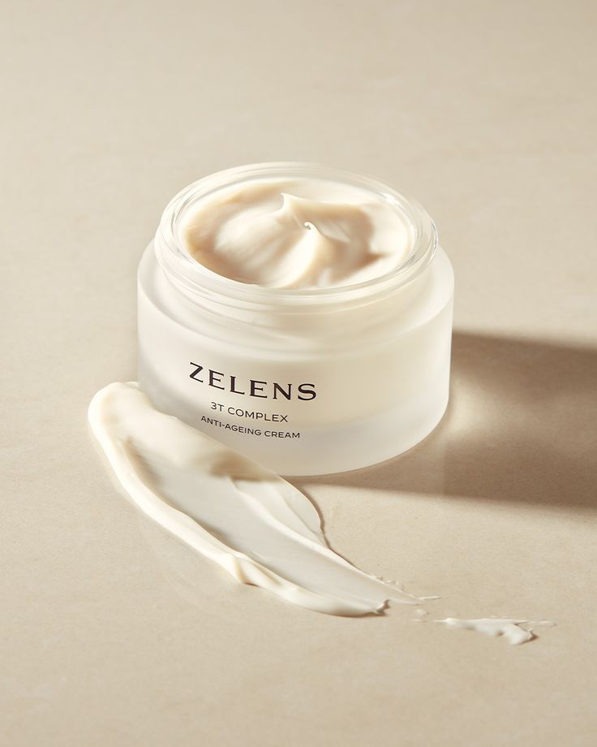
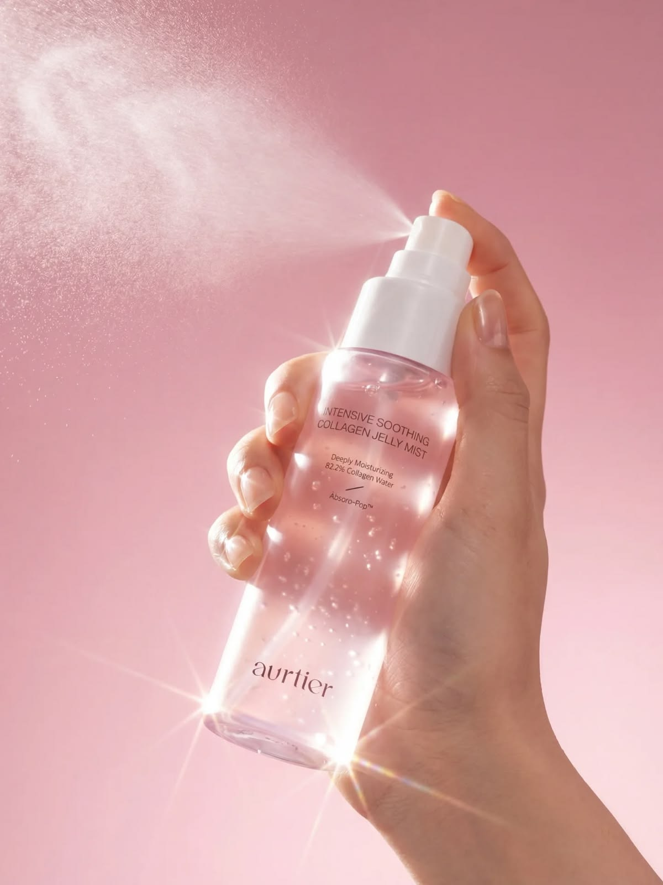
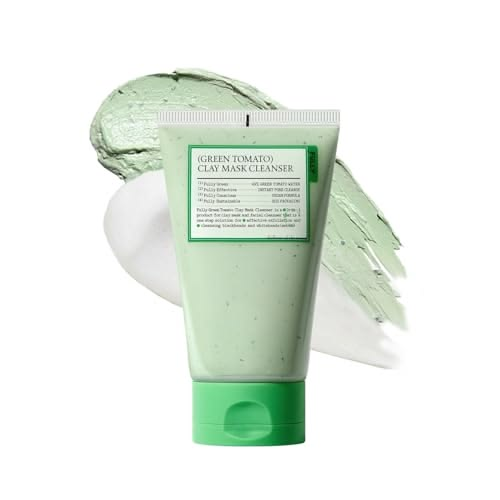

$35.000
En Skincare Pro encontrás productos de skincare para armar tu rutina de cuidado de la piel: serum facial, crema hidratante facial, tónico facial y limpiador. Mirá los precios y elegí el que mejor se adapta a tu rutina.

$35.000

$40.000

$25.000

$22.000
Es un producto liviano y concentrado que se aplica después de limpiar el rostro y antes de la crema hidratante. El serum de vitamina C suele usarse durante el día, junto con protector solar.
Sirve para mantener la piel hidratada. Se aplica al final de la rutina, después del serum.
Se aplica sobre el rostro limpio, antes del serum. El tónico en spray de pepino se rocía a unos centímetros de la piel.
Un orden habitual es: limpiador, tónico, serum y crema hidratante. Si tenés la piel sensible, probá cada producto primero en una zona pequeña.
Muy bueno todo!
Muy rico todo
Visitá nuestra tienda de skincare en Buenos Aires: Skincare Pro, en Hipólito Yrigoyen 2900, Buenos Aires. Atendemos los sábados de 11:00 a 13:00.